SunUI 移植試作 · 第二輪 · 2026-11-23
12 個區塊 × Vue 與 SwiftUI，加上三個新平台
做法和第一輪一樣：每份移植指南交給一個看不到原專案的全新 agent。這一輪的指南是從網站的正式端點取得的。「第一輪通過」代表沒有任何人工修改。示範裡的商品照片依規則換成灰色方塊，所以移植版沒有照片是預期的。
| 區塊 | Vue | SwiftUI |
|---|---|---|
| loading-button | 第一輪通過 | 第一輪通過 |
| favorite-button | 第一輪通過 | 第一輪通過 |
| quantity-stepper | 第一輪通過 | 第一輪通過 |
| otp-input | 能用，搖晃數值是猜的 | 能用，搖晃數值是猜的 |
| notify-badge | 第一輪通過 | 修了兩輪才對 |
| sliding-tabs | 第一輪通過 | 第一輪通過 |
| animated-number | 第一輪通過 | 第一輪通過 |
| checkout-steps | 第一輪通過 | 第一輪通過（只看到窄版） |
| toast-stack | 第一輪通過 | 第一輪通過 |
| compare-slider | 第一輪通過 | 第一輪通過 |
| scroll-reveal-text（捲動連動） | 第一輪通過 | 第一輪通過 |
| plush-portrait（WebGL） | 引擎沒有啟動 | 第一輪通過，改寫成 Metal |
| 新平台（各 3 個區塊） | confirm-button | range-slider | scratch-card |
|---|---|---|---|
| Svelte | 修一輪才對（寬度量錯） | 第一輪通過 | 第一輪通過 |
| Flutter | 第一輪通過 | 第一輪通過 | 第一輪通過 |
| React Native | 第一輪通過 | 第一輪通過 | 能刮但筆劃有漏，刮不到門檻 |
Vue：原版（左）對移植版（右）
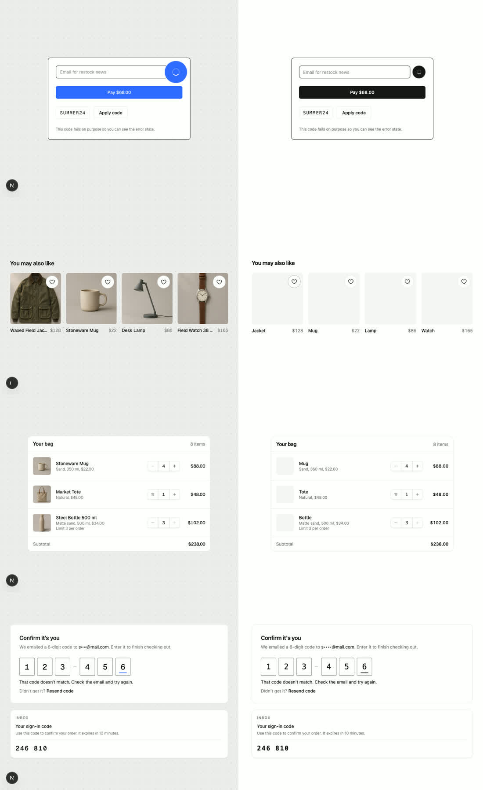
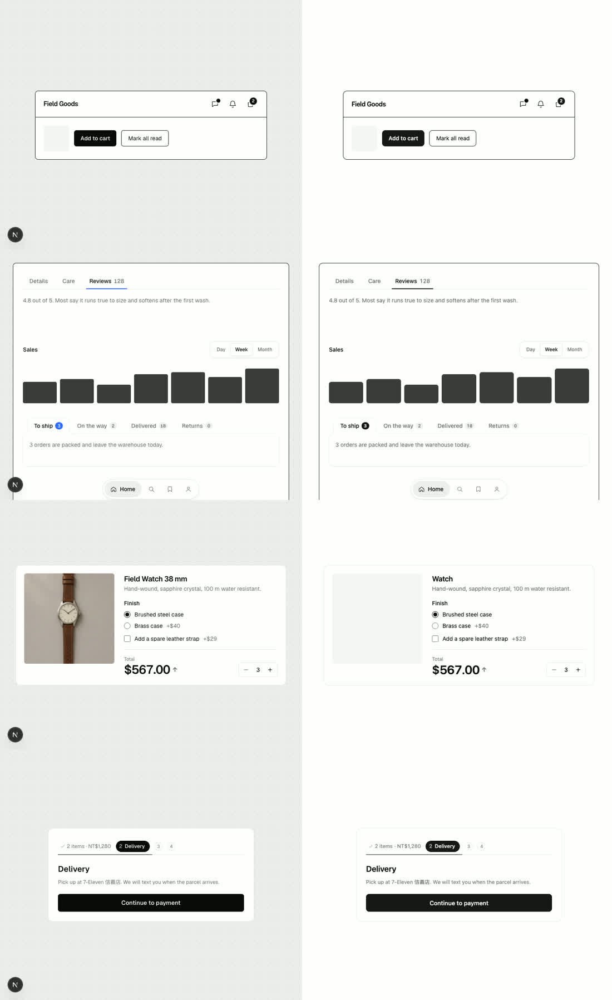
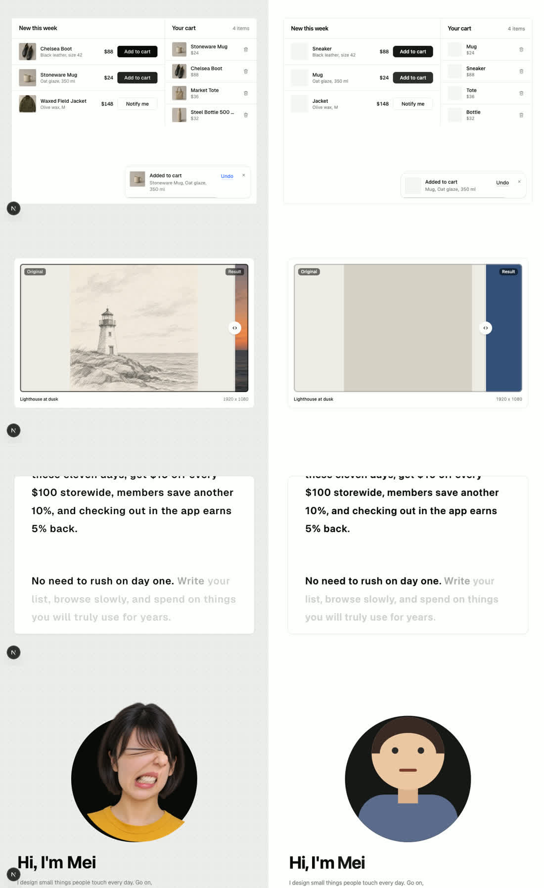
SwiftUI：iPhone 17 Pro 模擬器
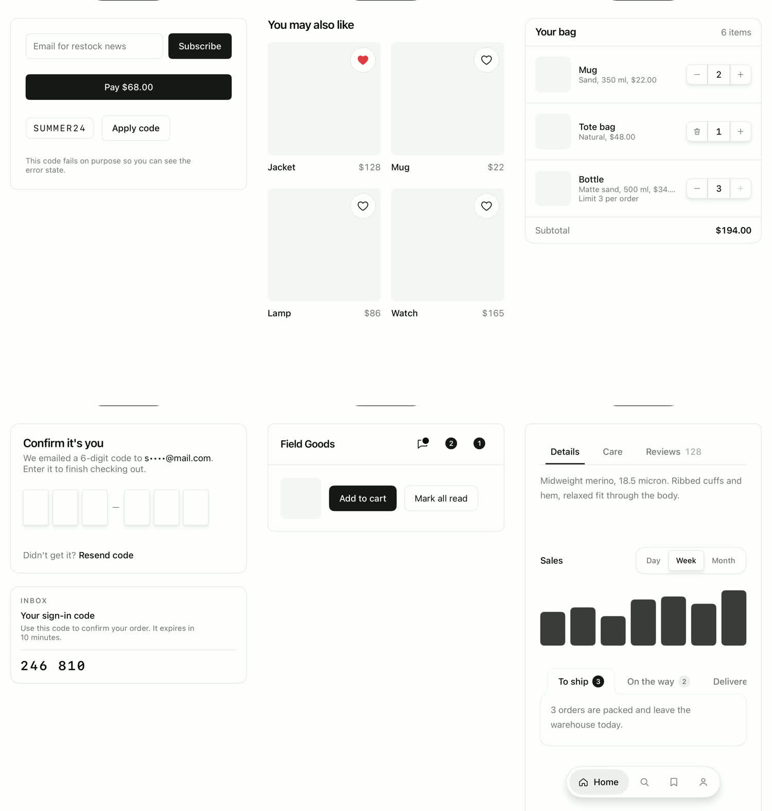
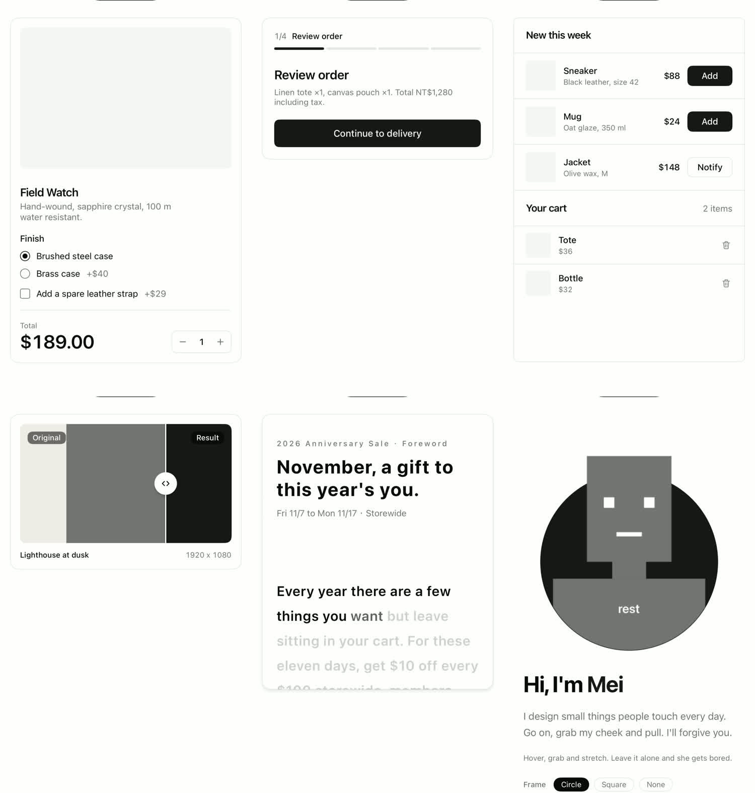
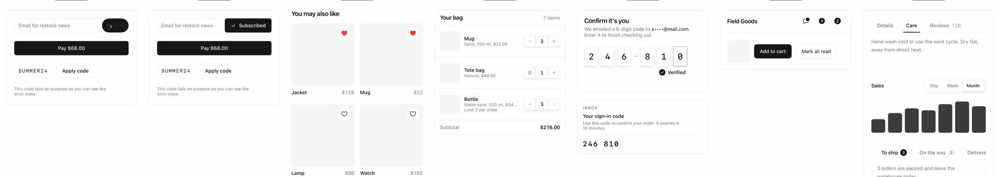
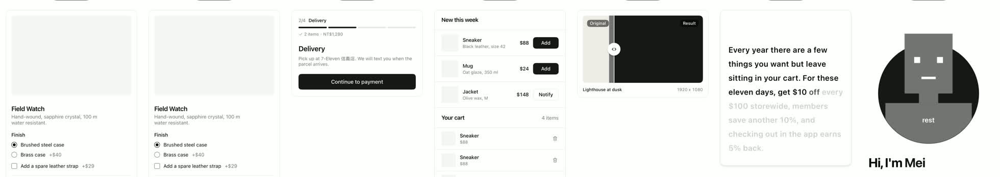
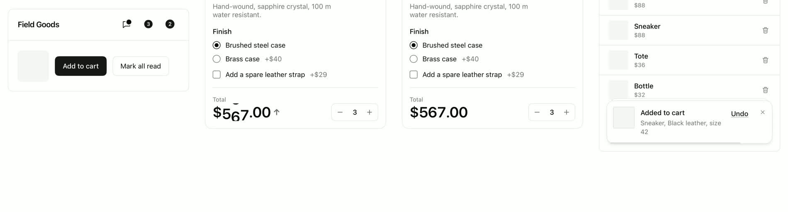
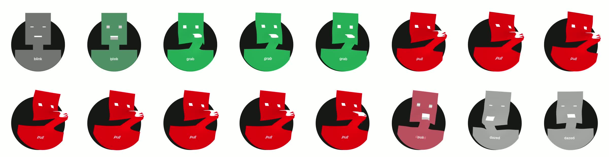
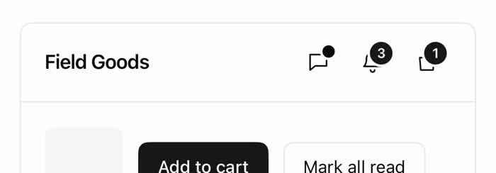
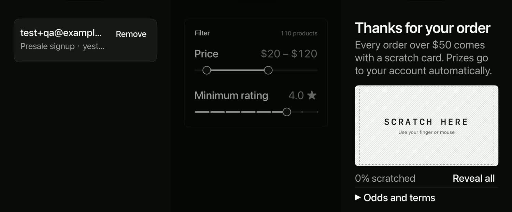
新平台
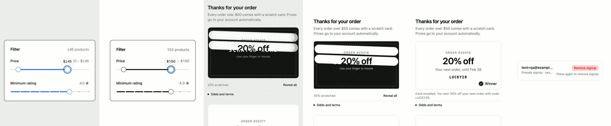
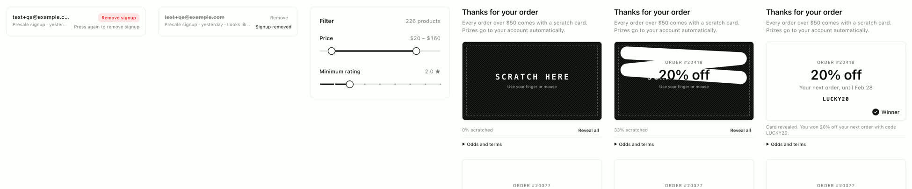
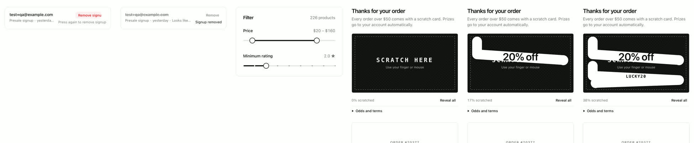